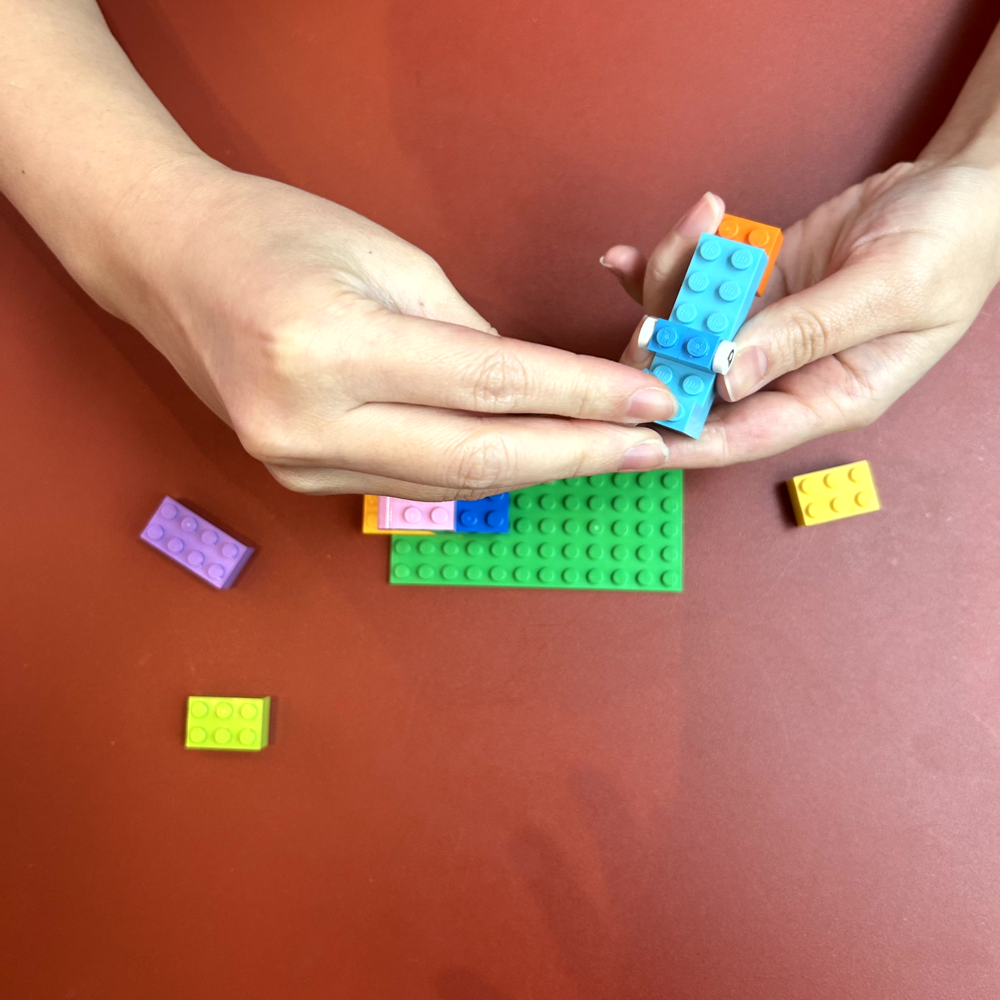
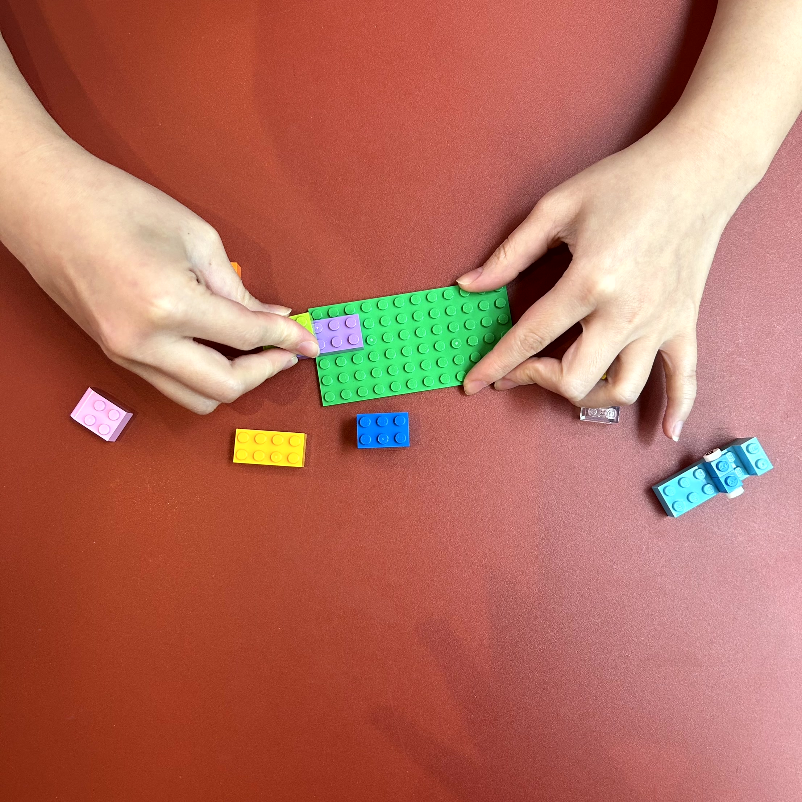
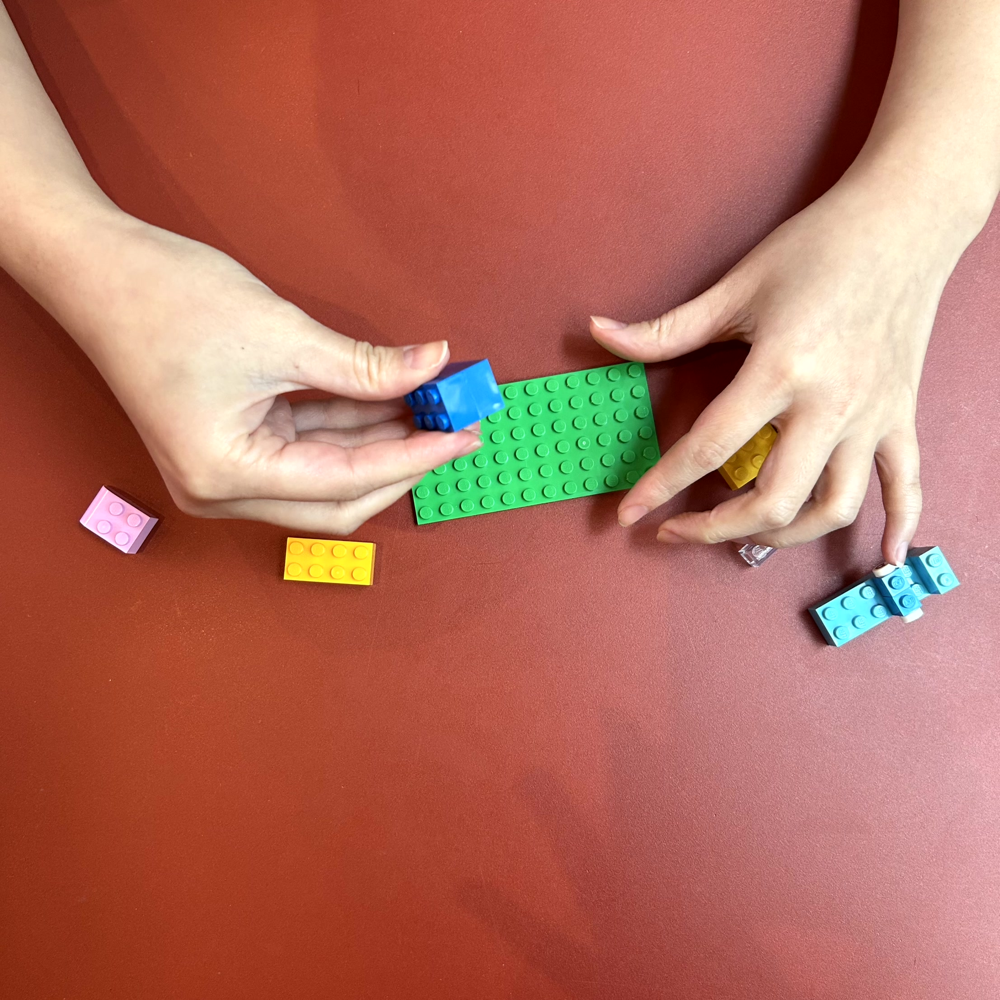
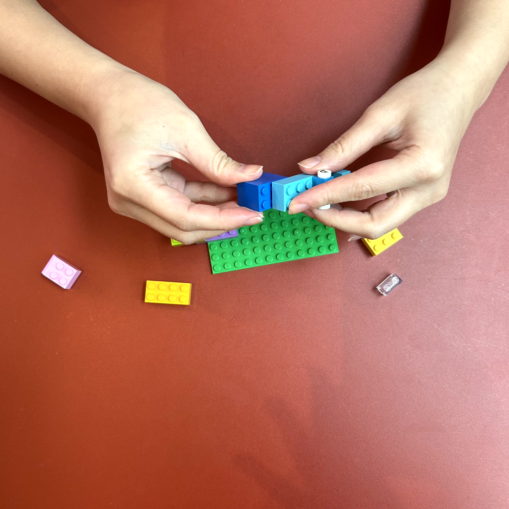
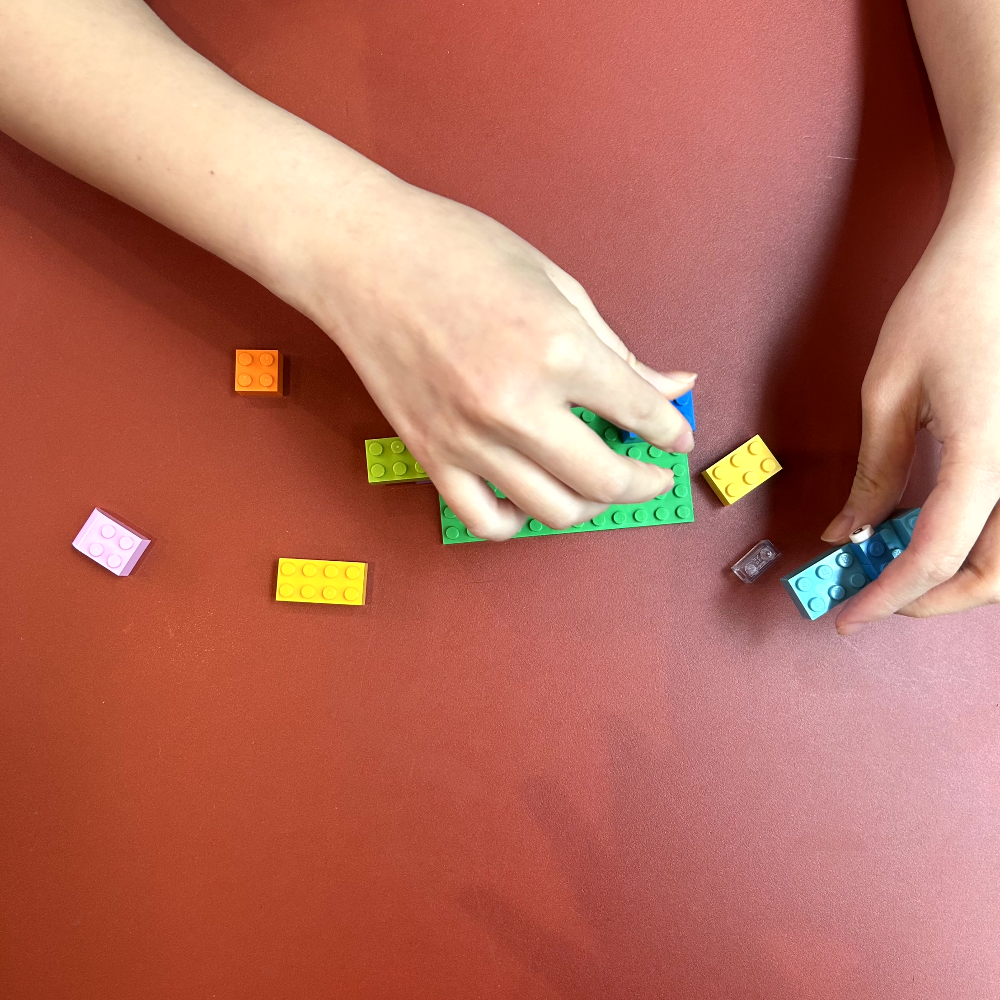
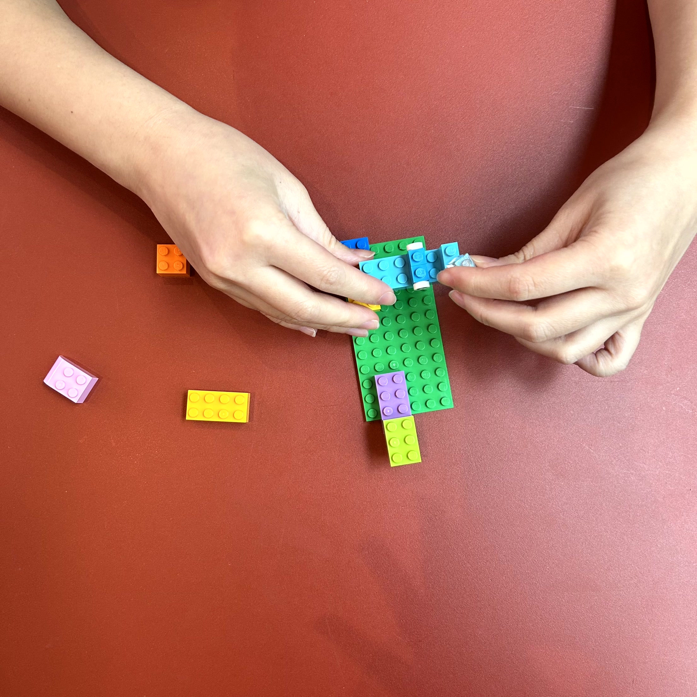
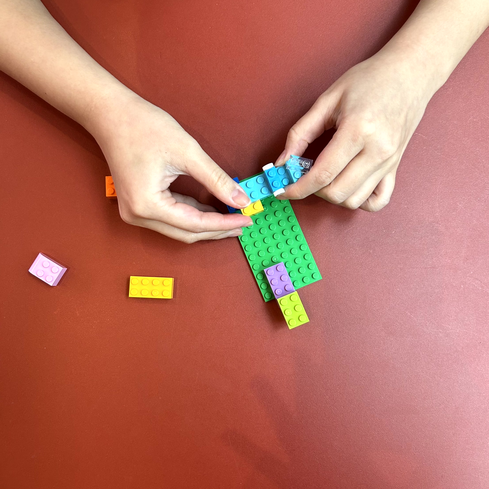
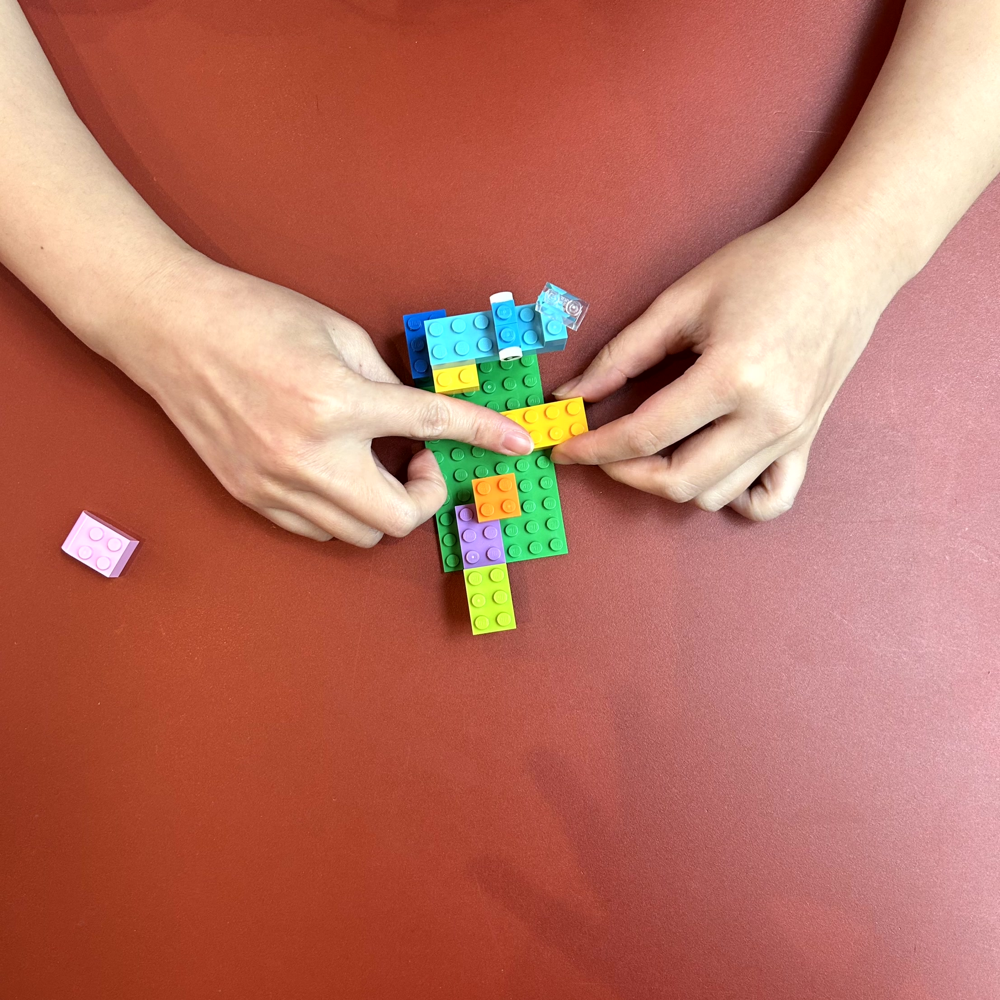

Lego_Render




Traditional methods of visualization and texturing often lack interactivity and intuitive exploration.
We made a user-friendly tool for experiencing digital textures with a physical interface.



